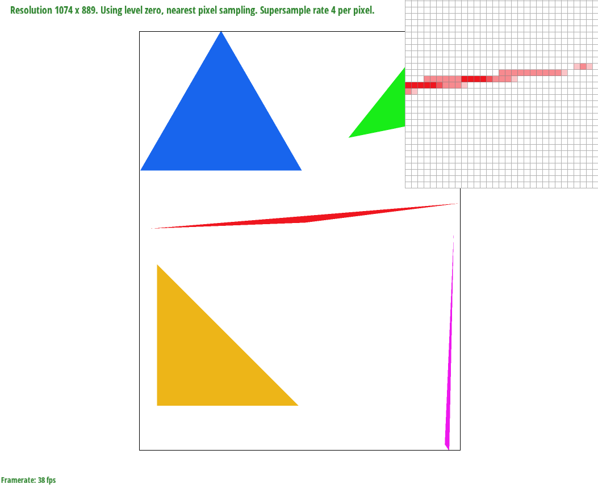
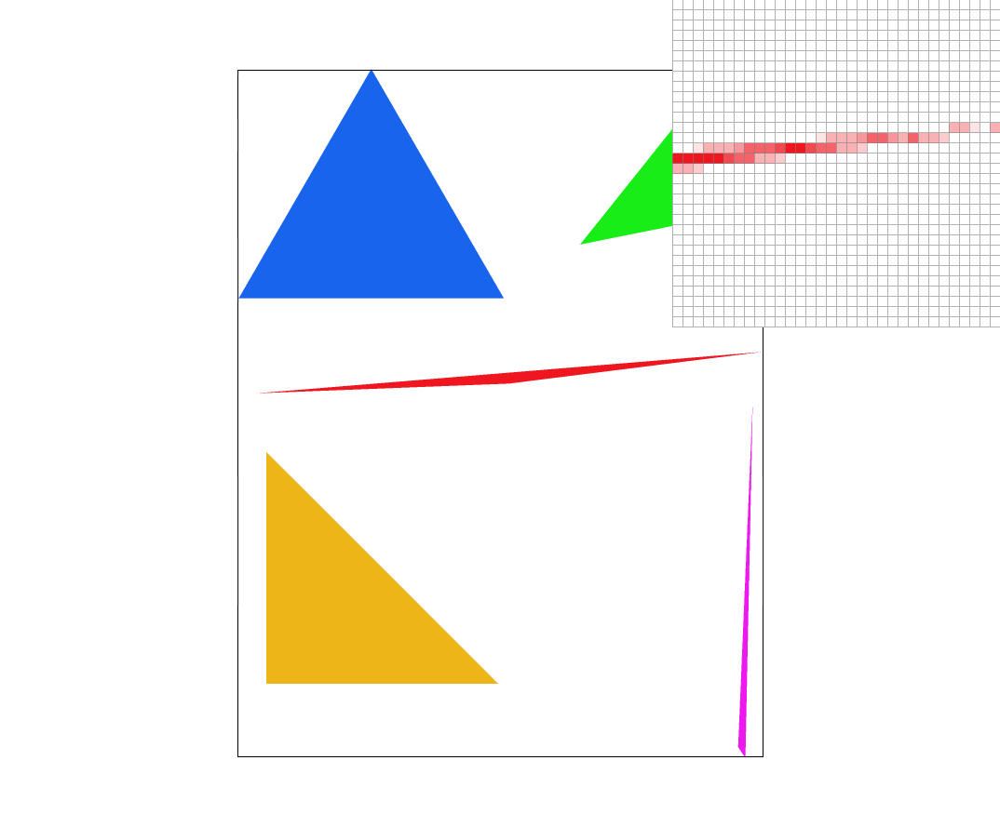
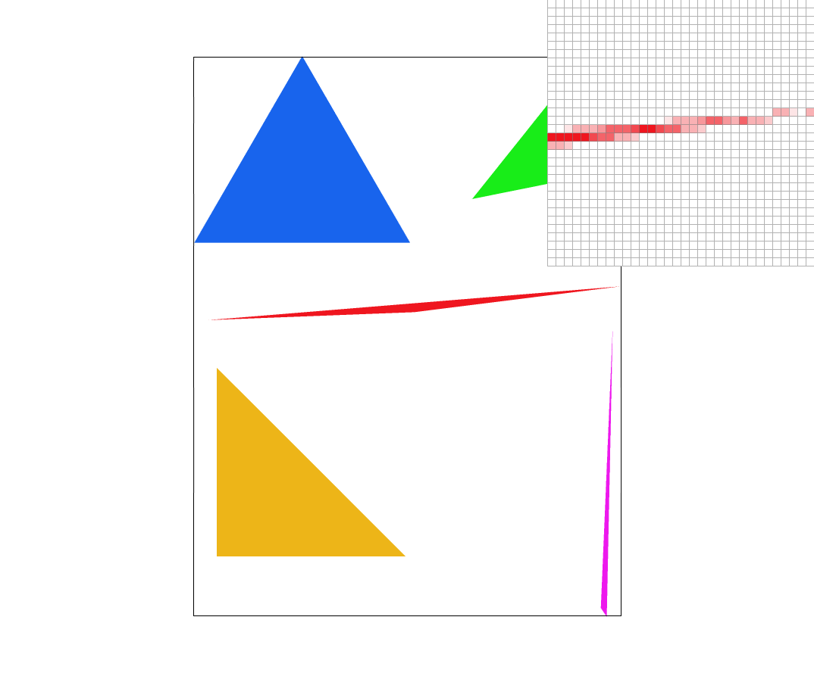

Overview
Give a high-level overview of what you implemented in this project. Think about what you've built as a whole. Share your thoughts on what interesting things you've learned from completing the project.
Section I: Rasterization
Part 1: Rasterizing single-color triangles
In order to rasterize a triangle we use the simple approach of 2D Sampling, which means we sample the pixel center if it is inside the triangle. In order to do that we have 2 for loops. This first one loops through the width and the second through the height of the triangle to get every pixel. Then we used the three line test to see if the center of the pixel is inside the triangle. In order to do so we made sure to add (0.5, 0.5) to our coordinates of each pixel to check if the center of the pixel was inside. If the pixel was inside the triangle, then we check the bounds. If 0 > floor(x), floor(x) >= width, 0 > floor(y), or floor(x) >= height then we end the function. If not then we fill the pixel.
This algorithm is no worse than the one that checks each sample within the bounding box of the triangle because my algorithm does exactly that. Therefore, it is no worse.
This screenshot is interesting because it shows how even though the triangle in the larger (zoomed out) picture looks like it is completely filled in, it is actually not. As you can see there are pixels at the tip of this triangle drawing that don’t have their centers inside the triangle according to our 3 line tests. So they are not filled in with color.
Part 2: Antialiasing triangles
Our supersampling algorithm is based on our regular rasterization algorithm from Task 1. We have the same 2 for loops through the width and height of the picture and the three line tests. Some modifications we made to the resterization pipelines are that we have 2 more for loops right after our initial for loops and 3 line tests. These 2 new for loop loops through all the subpixels of each pixel to check if their center points are inside the triangle edges, and if they are they set the index of the subpixel in the sample buffer to the color. Then, In resolve_to_framebuffer we added an if statement for if the sample_rate was greater than 1. Where we run 2 for loops to get all the subpixels’ color from the sample buffer and average it out to find the average color which we then use that average color to fill that pixel. We then take that average color and fill the target frame buffer with this color.
Supersampling is useful because it blurs the edges of the shapes, which in part make the image smoother.
|
|

|
|

|

|
As you can see the supersample one has blurrier edges. The reason for this is because in supersampling we get the average color of all the subpixels of each pixel. So if it’s an edge pixel the color will not be just fully red or white, but how many subpixels’ centers are within the triangle determines the intensity of the red in the pixel. So as you can see when we increase the sample rate we are increasing the number of subpixels and getting blurrier edges which makes for smoother images.
Part 3: Transforms
For this part, we used the mathematical formula brought up during lecture. Translate and scale was simple to implement. For rotate, it was a bit confusing as plugging in just the degree argument into sinusoidal functions in the given rotational matrix formula produced a head graphic rotated slightly off from the source svg image. After consulting Piazza and investigating what units the sinusoidal functions used, we figured out that we need to first convert the degree argument into radians. To do so, we multiplied deg by PI / 180, and then we inputted this radian measurement into the matrix.
For this updated version of the cubeman, we decided to put him in a “fencing” position (originally meant to be a Spider-Man swinging towards a camera but felt that this imagery was not as clear from the output image). To create this posture, we had to apply both rotations and translations to his right arm and both legs to keep the illusion of connected joints.
Section II: Sampling
Part 4: Barycentric coordinates

Barycentric coordinates is a way to find a position, color, or other graphic elements within a triangle relative to the vertices of the triangle. Depending on where a pixel is relative to each vertex and the value of a given graphic element at each vertex, the value of the graphic element we are investigating will correspond to the proportional distances to each vertex, which creates a nearly smooth gradient of values. For example, the above triangle shows this as each point lines up in a smooth transition between red, blue, and green, where each point’s color is a calculated value based on its proportional distance from the red, green, and blue points.
Part 5: "Pixel sampling" for texture mapping
Pixel sampling allows us to get a more accurate color relative to the image or texture we are trying to render for a given pixel rather than simply just grabbing the color of whichever pixel we are currently calculating for. If we were to not do pixel sampling and do the naive way of simple picking out colors from the corresponding pixel, we risk the image quality to look very jagged. \n\n Nearest pixel sampling involves looking at the nearest 4 surrounding
Part 6: "Level sampling" with mipmaps for texture mapping
Section III: Art Competition
If you are not participating in the optional art competition, don't worry about this section!